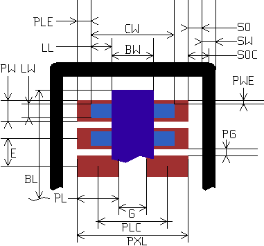

Default units: (you may override this by adding "mil" or "mm" to your values below)
|

Pad Numbering Sequence A B C D E F 1 8 1 5 1 2 8 1 5 1 2 1 2 7 2 6 3 4 7 2 6 2 4 3 3 6 3 7 5 6 6 3 7 3 6 5 4 5 4 8 7 8 5 4 8 4 8 7
|
Enter whatever data you have, as long as it's sufficient to describe the footprint:
|